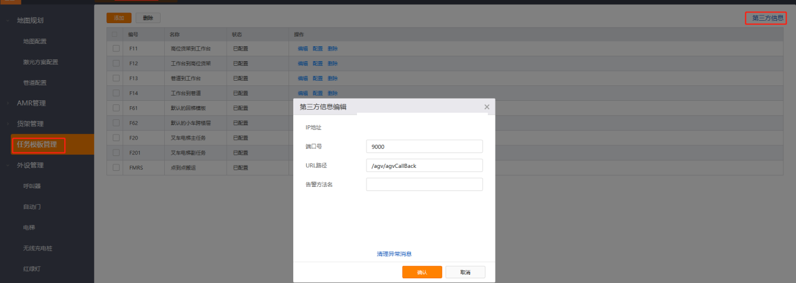
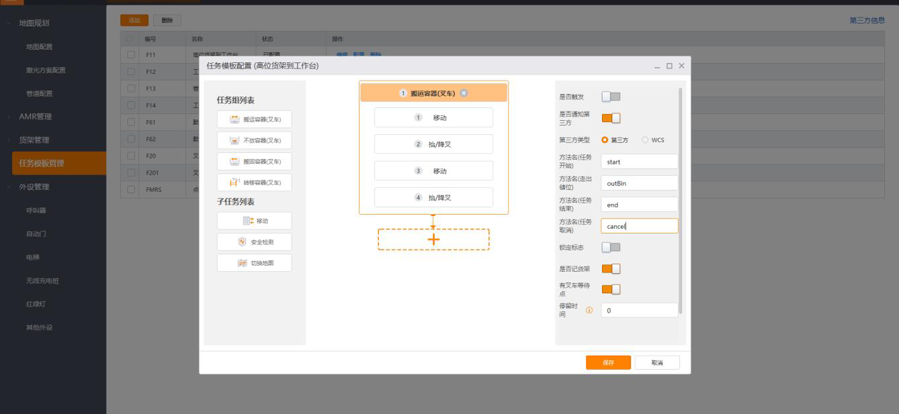

调度系统与上层平台的 REST 接口对接
上层平台对接 RCS-Lite 时任务能建、状态却收不到，多半是通知方法名或回调超时没对齐。三条必调接口的报文示例、forceCancel 的回库语义与常见结果码排查口径都在其中。
通信与接口目录
面向 WMS、MES 与调度侧联调的开发实施人员，依据内部操作手册 V1.1 归纳，接口字段与超时取值请按现场实测和实际版本应答核定。
适用范围与对接策略
适用于上层平台（WMS、MES、PDA 等）与 RCS-Lite 通过 HTTP（REST）+ JSON 对接的场景。手册明确：初步对接只需先调通三条必调接口，其余能力再按业务逐步接入。
- 必调三件套：生成任务单
genAgvSchedulingTask、继续执行任务continueTask、取消任务cancelTask。 - 回调：上层若需要任务执行状态，必须提供任务执行通知接口
agvCallback，供调度系统反向调用。 - 告警：需要接收停车类严重告警时，再实现
warnCallback。 - 调度系统调用上层接口时，连接超时默认 30 秒、数据返回超时默认 60 秒，超时会返回连接失败。
先配第三方信息与任务模板 → 调通三条必调接口 → 接入四类回调 → 最后补可选接口（绑定、封锁、状态查询）。顺序颠倒最容易出现“任务能建、状态收不到”。
阶段一 · 配置第三方信息
进入系统模型 > 任务模板管理 > 第三方信息，按上层平台提供的信息填写。
| 字段 | 填写说明 |
|---|---|
| IP 地址 | 上层平台服务地址（示例为内网地址，以现场实际为准） |
| 端口号 | 上层平台服务端口 |
| URL 路径 | 回调服务路径，例如 /agv/agvCallBack |
| 告警方法名 | 告警推送的方法名，与上层实现保持一致 |

填完点击“确定”保存。若后续上层地址变更，只需改这里，不必改任务模板。
阶段一 · 配置任务模板与四类通知方法名
以任务模板 F11 为例：在任务模板中选择“是否通知第三方”，第三方类型选“第三方”，再逐项配置方法名。
| 配置项 | 取值 | 说明 |
|---|---|---|
| 是否通知第三方 | 开启 | 关闭则调度系统不回推任何执行状态 |
| 第三方类型 | 第三方 / WCS | 与上层平台类型一致 |
| 方法名（任务开始） | start | 与第三方协商，可自定义 |
| 方法名（走出储位） | outbin | 同上 |
| 方法名（任务结束） | end | 同上 |
| 方法名（任务取消） | cancel | 同上 |

走出储位、任务完成、任务取消三类通知要参照任务开始通知单独配置，方法名互不相同；只配了 start 时，上层收不到结束与取消事件。
阶段二 · 协议约定与公共字段
协议统一使用 JSON。中文内容发送前用 URLEncoder.encode("string", "UTF-8") 编码，接收端用 URLDecoder.decode("string", "UTF-8") 解码。
| 约定项 | 内容 |
|---|---|
| 参数类型 | 所有参数均为字符串，数值与布尔也不例外 |
| 请求编号 reqCode | 每次请求唯一，建议 UUID；应答原样回传，形成一一对应 |
| 请求时间 reqTime | 格式 yyyy-MM-dd HH:mm:ss，由上层设定 |
| 调度侧 baseURL | http://IP:PORT/rcms/services/rest/hikRpcService，端口默认 8182 |
| 上层侧 baseURL | http://IP:PORT/xxx/agv |
| 报文兼容 | 上报字段多于文档列出字段，上层按业务截取，未知字段不要报错 |
应答结构固定为 reqCode、code、message，可选 data：code 为 "0" 表示成功，1~N 为失败并在 message 给出描述。
{
"code": "0",
"message": "成功",
"reqCode": "468513"
}
阶段二 · 生成任务单 genAgvSchedulingTask
上层发送调度请求，RCS 依据参数生成调度任务单。请求方式为 POST /rcms/services/rest/hikRpcService/genAgvSchedulingTask。
| 参数 | 必填 | 取值 / 说明 |
|---|---|---|
| taskTyp | 是 | 主任务类型编号，必须与 RCS-Lite 配置一致。厂内货架搬运 F01；叉车专用 F11 高位货架→工作台、F12 工作台→高位货架、F13 巷道→工作台、F14 工作台→巷道 |
| ctnrTyp | 否 | 容器类型，叉车项目必传 |
| ctnrCode | 否 | 容器编号，叉车专用 |
| wbCode | 否 | 工作位名称，字母/数字/组合，不超过 32 位，与平台配置一致 |
| priority | 否 | 优先级 1~127，默认 1，最高 127 |
| positionCodePath | 否 | 位置路径集合，列表长度小于 50，与模板配置一一对应 |
| podCode / podDir | 否 | 货架编号；方向 180/0/90/-90 对应地图左/右/上/下 |
| podTyp | 否 | 货架类型，传空表示随机找货架 |
| taskCode / agvCode | 否 | 任务单号（不填自动生成，UUID ≤ 64 位）／指定 AGV 编号 |
positionCodePath 中每项的 type 取值：00 位置编号、02 库区编号（第一个区域放不下可放第二个）、03 货架编号、05 仓位编号、06 巷道编号、07 容器编号（05~07 为叉车专用）。单个 positionCode 不超过 64 位。
{
"reqCode": "468513",
"reqTime": "2020-05-03 03:22:33",
"taskTyp": "F01",
"positionCodePath": [
{"positionCode": "p01", "type": "00"},
{"positionCode": "x02", "type": "02"}
],
"podCode": "100001",
"podDir": "0",
"agvCode": "9000",
"taskCode": "xxxxx_ECS"
}wbCode 与 positionCodePath 至少填一项；任务里要同时指定起点和终点时必须用 positionCodePath，只传 wbCode 无法表达多位置。
阶段三 · 继续执行任务 continueTask
用于上层确认后让 AGV 取下一个动作继续执行，路径 /rcms/services/rest/hikRpcService/continueTask。
taskCode、agvCode、wbCode、podCode四个只填一个，且必须与任务模板配置的触发类型一致，优先推荐taskCode。taskCode不填时由系统自动生成，填写时必须为 64 位 UUID。
{
"reqCode": "123",
"reqTime": "2020-05-03 03:22:33",
"wbCode": "020000XY030000",
"podCode": "600001",
"agvCode": "9000",
"taskCode": "123456"
}实际对接时不要照抄示例同时传四个字段，按模板触发类型二选一即可，否则可能触发到非预期任务。
阶段三 · 取消任务 cancelTask
取消正在执行的任务，路径 /rcms/services/rest/hikRpcService/cancelTask。取消后：潜伏车若背着货架直接把货架放在路上；叉车背着容器也把容器放在路上，同时小车状态置为空闲。
| 参数 | 取值 | 说明 |
|---|---|---|
| agvCode / taskCode | 二选一 | 都传时以 agvCode 优先；不传 agvCode 则按任务单号取消 |
| forceCancel | 0 / 1 | 0（默认）：取消后货架直接放地上；1：仍背着货架按回库区域回库，仅潜伏车支持 |
| matterArea | 区域编号 | forceCancel=1 时有意义，指定回库区域 |
{
"reqCode": "1541954B96B1112",
"forceCancel": "1",
"matterArea": "abc",
"agvCode": "",
"taskCode": "123456"
}取消是立即终止，货架/容器会落在当前路径上，可能造成通道阻塞。使用 forceCancel=1 前务必确认 matterArea 回库区域已配置且可用，否则车可能无处可去。
阶段四 · 任务执行通知 agvCallback
由调度系统回调上层，涵盖任务开始、走出储位、任务完成、任务取消四类事件。地址形如 http://IP:PORT/xxx/agv/agvCallbackService/agvCallback。
| 字段 | 必填 | 说明 |
|---|---|---|
| method | 是 | 方法名，由任务模板配置后告知上层，默认 start / outbin / end / cancel |
| currentPositionCode | 是 | 当前位置编号，含义随事件变化（见下表） |
| cooX / cooY | 否 | 地码坐标（mm），任务完成时有值 |
| mapCode / mapDataCode | 否 | 地图编号；地码编号，任务完成时有值 |
| podCode / podDir | 否 | 背货架时才有货架编号；方向任务完成时有值 |
| robotCode / taskCode | 是 | AGV 编号；当前任务单号 |
| 事件 | currentPositionCode 含义 |
|---|---|
| 任务开始（start） | 任务起点 |
| 走出储位（outbin） | 任务起点 |
| 任务取消（cancel） | 工作位编号 |
| 任务结束（end） | 任务终点 |
上层应答同样返回 code、message、reqCode；报文里字段可能多于文档，按需截取即可。
可选接口速查
| 能力 | 接口 / 路径 | 关键参数与要点 |
|---|---|---|
| 货架与位置绑定 | bindPodAndBerth | podCode、positionCode 必填，解绑时两者都要传用于校验；podDir 0 横向、1 纵向，不传默认横向；indBind 1 绑定 / 0 解绑 |
| 释放 AGV | freeRobot | robotCount 为 -1 表示全部，此时 mapShortName 必填；也可用 robots 数组指定编号 |
| 查询任务状态 | queryTaskStatus | taskCodes 数组与 agvCode 至少传一个；taskStatus 1 已创建、2 执行中、5 取消完成、9 已结束。参数错误或任务不存在也返回成功 |
| 容器与仓位绑定 | bindCtnrAndBin | ctnrTyp 必填；stgBinCode 与仓位绑定/解绑时必填；indBind 1/0 |
| 巷道与容器绑定 | bindCtnrAndTunnel | tunnelCode 必填，会把容器类型写入该巷道内全部仓位 |
| 区域封锁 | blockArea | matterArea、indBind、pause、controlMod、effect 必填；封锁后区内 AGV 停止、将进入的绕行 |
| 设置优先级 | setTaskPriority | priorities 数组内逐条给 taskCode 与 priority（1~127） |
| AGV 状态 | queryAgvStatus | 路径不同：/rcms-dps/rest/queryAgvStatus，mapShortName 必填，返回坐标、电量、速度、状态等 |
| 告警推送 | warnCallback | 路径固定为 /service/rest/agvCallbackService/warnCallback，推送导致停车的严重告警，约 10 秒一次 |
blockArea 的 controlMod 取值：0 调度到区域外（默认）、1 调度到区域外暂住区、2 调度到指定区域（需 targetArea，目前不支持）、3 封锁区。effect 为是否调度车辆，取 1 时 idle、execute、charge、stay、work 才生效。
结果码速查与排障
| 结果码 | 含义 | 优先排查 |
|---|---|---|
| 0 | 成功 | — |
| 1002 | RCS 接口调用返回失败 | 查调度侧日志与上层应答，区分参数问题还是服务不可用 |
| 1003 | 未找到该任务或任务已执行完 | 重复下发、重复继续执行 |
| 1004 / 1012 / 1014 | 呼叫站点别名取不到点位 / 别名不存在 / 呼叫站点不能为空 | 模板使用了呼叫站点配置，但未传或未配别名 |
| 1006 / 1007 / 1013 | 站点集合数量不对 / 地码与站点集合都为空 / 站点集合数据错误 | positionCodePath 与模板不匹配 |
| 1009 / 1010 / 1011 | 地码不存在 / 货架不存在 / 小车不存在 | 点位、货架、车号是否已在平台登记 |
| 1025 | reqCode 重复 | 重试时复用了同一 reqCode |
| 1027 | 货架正在出入库，被锁定 | 业务时序冲突，等待或改约任务 |
| 1042 / 1045 / 1046 | 需要传容器编号 / 可出库容量为 0 / 可入库容量为 0 | 叉车任务漏传 ctnrTyp、ctnrCode；巷道或库区容量不足 |
先看 code 再对 message。1002 属于调度内部失败，必须两侧日志合看；1009~1013 一类基本都是配置与数据不一致，直接对点位和模板。
牵引车专用接口（仅对应车型可用）
牵引车（CMR）的接口与通用任务接口分开，其他车型项目不要调用。
AgvCommand：控制调度命令，commandType0 继续、1 暂停、2 恢复、3 关机、5 更新地图；关机需同时给shutDownTime（单位 s，最长 7 天）。车号与位置同时存在时只用车号。CmrReplace：小车异常后把数据迁移到新车，需oldCmrCode、newCmrCode。CmrSetData：向小车写入数据，data最长 128，配agvId。RobotApplyEnterArea/RobotApplyReleaseArea：区域进入与释放申请，参数为robotId与areaCode。
收尾与注意事项
- 接口升级或任务模板调整后，方法名与第三方地址要同步复核，否则回调会静默丢失。
- 所有参数按字符串传，数值型（priority、forceCancel、indBind）尤其容易因类型错误被拒。
reqCode必须唯一；上层重试策略要换号，否则命中 1025。- 取消与区域封锁都会立刻改变现场状态，建议先在测试环境演练参数组合。
- 回调应答要尽快返回，避免超过 60 秒数据返回超时导致调度侧判定失败并重推。
- 告警推送频率约 10 秒一次，上层需做去重，避免同一告警重复建单。
上线前核对
- 第三方信息中的 IP、端口、URL 路径、告警方法名已与上层平台核对一致
- 任务模板已开启“是否通知第三方”，start/outbin/end/cancel 四个方法名均已配置
- 生成任务单、继续执行、取消任务三条接口均返回 code="0"
- taskTyp 与平台主任务类型编号一致（F01 或叉车 F11~F14）
- positionCodePath 的 type 取值正确（00/02/03/05/06/07），列表不超过 50 项
- continueTask 只传一个触发字段，且与模板触发类型一致
- cancelTask 的 forceCancel 与 matterArea 组合已在测试环境验证
- agvCallback 能收到四类事件，method 与模板配置一致
- reqCode 每次唯一，重试不复用旧编号
- 上层回调接口应答在 60 秒内返回，告警推送已做去重
- 牵引车项目确认使用 CMR 专用接口而非通用任务接口